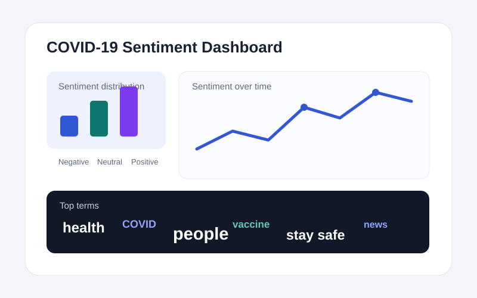

Natural Language Processing
COVID-19 Twitter Sentiment Analysis
Analyzed more than 170,000 tweets using text cleaning, TextBlob sentiment labeling, TF-IDF features, Logistic Regression, and Random Forest. Visualizations explained sentiment distribution, trends, hashtags, and word usage.